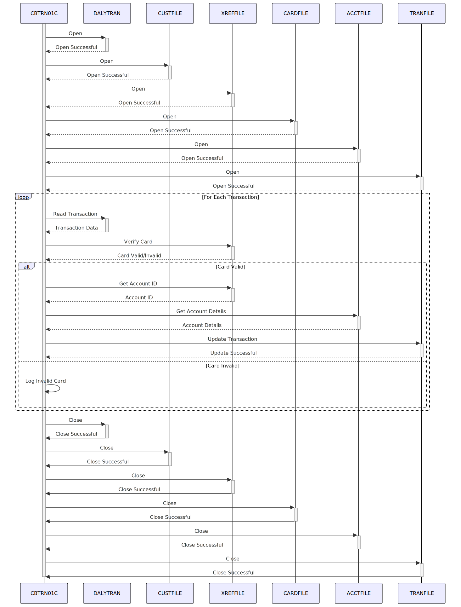

Gerado em: 1 de outubro de 2024
Título do Documento: CardDemo - Processamento Diário de Transações - Especificação do Programa
Descrição Resumida:
Este programa processa transações diárias de cartão de crédito. Ele verifica se cada transação é válida e atualiza as contas dos clientes de acordo. É como um sistema que garante automaticamente que toda a atividade do cartão de crédito do dia esteja correta e que os saldos dos clientes estejam atualizados.
Histórias do Usuário:
Como analista de dados, preciso garantir que todas as transações de cartão de crédito sejam processadas com precisão para que eu possa usar esses dados para análise e geração de relatórios.
Épico Relacionado:
4 - Processamento de Transações
Requisitos Funcionais:
-
Manipulação de Arquivos:
- O programa deve abrir e ler registros do arquivo de transações diárias (
DALYTRAN).
- Deve abrir e ler registros do arquivo do cliente (
CUSTFILE) com base no ID do cliente.
- Deve abrir e ler registros do arquivo de referência cruzada da conta do cartão (
XREFFILE) com base no número do cartão.
- Deve abrir e ler registros do arquivo do cartão (
CARDFILE) com base no número do cartão.
- Deve abrir e ler registros do arquivo da conta (
ACCTFILE) com base no ID da conta.
- Deve abrir e gravar registros no arquivo de transações (
TRANFILE).
- Finalmente, o programa deve fechar todos os arquivos abertos.
-
Verificação do Cartão:
- Para cada transação, o programa deve verificar se o número do cartão é válido comparando-o com o
XREFFILE.
- Regra de Negócio: Somente transações feitas com cartões válidos e ativos devem ser processadas.
-
Recuperação de Conta:
- Após a verificação bem-sucedida do cartão, o programa deve recuperar o ID da conta correspondente do
XREFFILE.
- Regra de Negócio: Cada cartão válido deve estar vinculado a uma conta para garantir que as transações sejam atribuídas corretamente.
-
Processamento de Transações:
- O programa deve se preparar para atualizar os registros de transações com base nos dados processados.
- Regra de Negócio: Todas as transações processadas, bem-sucedidas ou não, devem ser registradas para fins de auditoria e reconciliação.
Requisitos Não Funcionais:
- Desempenho: O programa deve processar transações de forma eficiente, especialmente considerando o alto volume de transações diárias.
- Confiabilidade: O programa deve ser robusto e capaz de lidar com erros inesperados normalmente, sem interromper o processamento de outras transações.
- Manutenibilidade: O código deve ser bem estruturado, documentado e fácil de entender para futuras manutenções e aprimoramentos.
- Segurança: O acesso ao programa, arquivos de dados e informações confidenciais deve ser restrito apenas ao pessoal autorizado. Números de cartão e outros dados confidenciais devem ser criptografados.
Critérios de Aceitação:
- O programa deve abrir e ler dados com sucesso de todos os arquivos de entrada necessários (
DALYTRAN, CUSTFILE, XREFFILE, CARDFILE, ACCTFILE).
- Deve verificar com precisão a validade dos números dos cartões usados nas transações.
- O programa deve recuperar os IDs de conta corretos associados aos números de cartão válidos.
- Deve gravar com sucesso os registros de transações processados no arquivo de transações (
TRANFILE).
- O programa deve lidar com erros de arquivo e erros de validação de dados normalmente, registrando-os adequadamente para investigação.
- Todas as transações devem ser processadas completamente, sem quaisquer atualizações parciais ou corrupção de dados.
Melhorias de Código:
- Implementar um mecanismo centralizado de tratamento de erros para gerenciar diferentes cenários de erro normalmente.
- Adicionar registro detalhado para melhor depuração e auditoria, incluindo carimbos de data/hora, códigos de erro e dados relevantes.
- Considere o uso de um sistema de gerenciamento de banco de dados (DBMS) em vez de arquivos simples para melhorar a integridade, segurança e recursos de consulta de dados.
- Explorar técnicas de otimização de desempenho, como indexação e otimização de consulta, para processamento mais rápido.
Melhorias de Segurança:
- Implementar mecanismos de controle de acesso para restringir a execução do programa e o acesso a dados apenas a usuários autorizados.
- Criptografar dados confidenciais, como números de cartão e informações do cliente, tanto em trânsito quanto em repouso.
- Implementar trilhas de auditoria para rastrear todo acesso a dados e modificações para segurança e conformidade.
Diagrama Conceitual:

–Made by “Smart Engineering” (by Compass.UOL)–